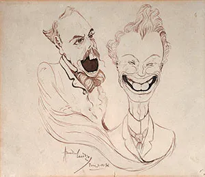

Amadeo de Souza-Cardoso, né le 14 novembre 1887 à Manhufe, paroisse de Mancelos, Amarante, mort le 25 octobre 1918 à Espinho, est un peintre portugais, précurseur de l'art moderne.
Ses débuts artistiques
Sa famille est riche et elle l'incite à s'inscrire en faculté de droit à l'Université de Coimbra, mais en 1905, il abandonne son cursus de droit pour suivre des cours d'architecture à l'Académie des beaux-arts de Lisbonne.
Ses premières expériences artistiques connues sont des dessins et des caricatures, après quoi il se consacra à la peinture.

Caricature de Alves Cardoso et Emmerico Nunes
Amadeo de Souza-Cardoso explore ensuite l'expressionnisme et ses derniers travaux expérimentent de nouvelles formes et de nouvelles techniques, comme des collages et d'autres formes d'expression plastique.
Le 25 octobre 1918, il meurt prématurément à Espinho, emporté par la grippe espagnole.